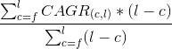
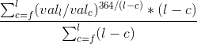

Перед вами графики индексов Московской биржи. Данные загружаются в процессе открытия этой страницы с их сайта (по API). Новые значения появляются каждый торговый день. Мы будем рассматривать портфель, состоящий только из двух групп активов: акций и облигаций.
В качестве акций выступает индекс MCFTRR: индекс полной (т.е. с учетом дивидендов) доходности акций. Он будет моделировать ситуацию покупки акции этих компаний в тех же долях, в каких они входят в индекс.
RGBITR: индекс государственных облигаций, посчитанный методом совокупного дохода (т.е. с учетом купонов).
Настройте портфель в соответствии с вашими пожеланиями и нажмите "Построить". Вы можете выбирать дату начала инвестирования. Если дата будет меняться, данные по индексам будут пересчитываться так, чтобы в указанную дату каждый из них имел условную стоимость равную единице. Так что бы в можно было видеть, во сколько раз выросли показатели относительно момента начала инвестирования.
Asset allocation, что можно перевести как "распределение активов" - это вид стратегий портфельного инвестирования. Их смысл в распределении капитала между разными группами активов в какой-то пропорции. Пример: акции, облигации, золото как 40/20/20. Проходит время, какие-то активы вырастают, какие-то падают. Подразумевается, что в какой-то момент, вы выравниваете пропорции продавая то что выросло и покупая то что упало.
В группе стратегий Asset allocation можно выделить одну простую и интересную идею инвестирования. Ее преимущество в том, что она доступна всем, не требует никаких специальных знаний и навыков. Она очень проста в управлении: не нужно разбираться в отчетности компаний, следить за новостями и ситуацией на рынке. На английском ее часто называют как "Lazy portfolio", на русский переводят как "Ленивый портфель", "Портфель простака", "Портфель лежебоки".
Вы выбираете классы активов и пропорции, в которых они будут входить в ваш портфель. Покупаете. И забываете о портфеле на какой-то условленный срок: например, год-полтора. По прошествии этого срока возвращаетесь и производите ребалансировку: что-то продаете, а что-то покупаете так, чтобы восстановить изначальный баланс. Далее продолжаете в том же духе.
Пример портфеля: 60% акции, 40% облигации. Ребалансировка - раз в год. В самом начале инвестирования распределяем капитал в соответствии с пропорцией 60/40. Проходит год. За это время стоимость наших вложений изменилась. Допустим, текущая стоимость акций в портфеле к его облигационной части стала 80/20. Тогда мы продаем акции и покупаем облигации так, чтобы вернуть свои изначальные 60/40. Проходит следующий год, и все повторяется.
Важно: акции - это не одна какая-то акция, они должны быть диверсифицированы. Акции - это класс активов. Пожалуй, самым простым (у нас же ленивая стратегия!) и надежным выбором будет покупка акций, которые входят в индекс биржи, в тех же пропорциях. Например, на Московской бирже есть индекс "Голубых фишек" - 15 наиболее ликвидных акций (разные акции входят в индекс в разных долях, это можно увидеть по ссылке). Есть более узкий - ТОП10 компаний, или более широкий и самый известный, который так и называется - индекс МосБиржи.
Думаю, если у вас не миллиарды, индексы ТОП10 или ТОП15 будут оптимальными с точки зрения удобства и диверсификации.
Аналогично с облигациями. Но, на практике, если брать только ОФЗ (Облигации федерального займа - облигации, выпущенные государством, т.е. самые надежные), можно позволить более слабую диверсификацию. Сегодня (2019 г.), если не брать в расчет облигации преддефолтных компаний, ОФЗ дают плюс-минус такую же доходность что и облигации других организаций. И это при несравненно меньших рисках и большей ликвидности. Большого смысла выбирать что-то кроме ОФЗ для облигационной части портфеля нет.
Самое интересное, что порой (как правило такое начинает происходить через длительный промежуток времени), такая стратегия может приносить вам доход больший, чем инвестирование в любую группу активов по отдельности. Почему? Подразумевается, что в следствие цикличности рынка, разные классы активов то растут, то падают, то опять растут. Иногда, и это желательное поведение, они двигаются разнонаправленно. Эта стратегия вынуждает вас продавать то что выросло в цене и покупать то что упало, а потом опять и опять - т.е. порой ловить рост разных активов.
Так какие параметры портфеля выбрать? И, самое главное, какую доходность можно ожидать? Сначала нужно ответить на второй вопрос: как оценить доходность портфеля, а потом можно будет сравнить по этому показателю разные портфели между собой.
Тут можно было бы взять CAGR - показатель, характеризующий годовую доходность вложений. Но за какой период? И справедливо ли будет выбрать произвольно какой-то один период для этих целей? Посмотрим на MCFTRR на графике вверху страницы. На текущий момент (январь 2019 года) его CAGR равен 1,16.
Но что, если нам просто повезло? Ведь дата начала расчета выбрана произвольно: это просто дата с которой начали публиковать индекс MCFTRR (26.02.2003). Аналогично выбрана конечная дата расчета CAGR - сегодняшний день. Что, если случайно эти даты выбраны слишком удачно/не удачно?
На том же графике вы можете смоделировать ленивый портфель выбрав дату начала инвестиций на пике перед обвалом 2008 года. К этой дате будут приведены и индексы - для сравнения с вашим портфелем. Вы увидите, что CAGR по MCFTRR стал где-то 1,06! Аналогично, выбрав датой начала самое дно кризиса 2008 года, вы можете получить почти 1.2! Так на какой CAGR можно было бы рассчитывать в среднем?
Кажется, на этот вопрос можно дать ответ как-то усреднив значения показателя, взятые по разным периодам. Предлагаю сделать так: посчитаем CAGR для каждого из всех возможных периодов. Начнем с 26.02.2003 по сегодняшний день, затем с 27.02.2003... и так далее до последнего периода длиной в 0 дней (с сегодня по сегодня). На данный момент это 5 838 периодов (но каждый торговый день их количество будет увеличиваться на 1 - ведь на этой странице значения индексов дополняются; так что ваш опыт может быть иным).
При этом есть ощущение, что чем длиннее период, по которому считается CAGR - тем более устойчивое значение мы получаем. Ведь на коротком периоде даже незначительное колебание итогового значения индекса приведет к относительно сильному изменению CAGR. Хочется как-то учесть это соображение, и не усреднять равноправно значения CAGR взятые на периодах в 5 000 и в 2 дня.
Тогда значениям CAGR можно дать веса: пусть показатель, взятый за период в 5 838 дней имеет вес в 5 838, за период в 5000 дней - вес в 5000, за период в 2 дня - 2. Мы перемножим значения CAGR и их веса, сложим, и разделим на сумму всех весов.
Тоже самое в формульном виде: , где f - самая ранняя дата для расчетов, l - последняя дата, c - текущая, стремится от f к l каждый раз прибавляя по дню, (l-c) - разница между датами в днях.
Или, если развернуть расчет CAGR, то: , где val_с, val_l - значения индекса на соответствующие даты.
Теперь у нас есть показатель - weightedCAGR. Рассчитаем его для разных соотношений акций/облигаций, а также для разных периодов ребалансировки. Именно это будет происходить на графике ниже если нажать кнопку "Рассчитать".
Для расчетов выбраны периоды ребалансировки из массива: [1, 7, 30, 90, 182, 365, 182+365, 365*2]
Интересен не только weightedCAGR как некая средняя доходность. Но и то, насколько большой разброс вокруг этой средней у всех CAGR по всем периодам. Для этого, параллельно, на графике ниже отображается стандартное отклонение значений CAGR от среднего (weightedCAGR). Это некая мера волатильности доходности.
На самом деле сейчас weightedCAGR учитывает не все возможные периоды расчета CAGR (как в формуле), а лишь каждые 60 - иначе слишком долго считает. Может быть потом получится оптимизировать код с точки зрения производительности и считать каждый день. Тем не менее, по моим тестам результаты плюс-минус одинаковые.
Разглядывая получившиеся графики можно сделать несколько выводов (январь 2019):
Еще раз хочу пояснить по ожидаемой доходности. В реальности она зависит от... удачи, или, иначе, от допущений о том какой информацией вы обладаете. Например, если вы (думаете что) в состоянии оценить перепроданность на рынке акций, очевидно, что, ожидая возможного снижения, вы не будете на 100% в акциях. И, наоборот, видя, что акции дешевы как никогда, предпочтете быть в акциях по максимуму. В этом случае ваша доходность будет выше средней.
Но, в таком случае, ленивый портфель не для вас. Скорее, вы все так же будете распределять активы, но балансировать их будете не по формальному правилу - наступление даты ребалансировки, а в соответствии с вашими предположениями относительно ситуации на рынке. Да и навряд ли вы будет вкладываться в индекс, скорее вы предпочтете выбрать более узкий перечень наиболее перспективных бумаг.
Кстати, то, что я описал в последних двух абзацах соответствует моей стратегии на рынке).
Концепции ленивого портфеля больше соответствует предположение что раз уж вы не знаете какие именно бумаги включать в портфель (и вкладываетесь в какой-то индекс), раз уж вы формально подходите к вопросу ребалансировки (ребалансируя портфель через равные промежутки времени), то, наверное, вы так же не знаете в какой момент следует войти на рынок. А значит вам может с этим повезти, а может и нет, но, в среднем, вы можете ориентироваться на показатель weightedCAGR.
Безусловно, остается открытым вопрос, почему weightedCAGR рассчитан именно таким образом. Например, можно выдвинуть такой аргумент против присвоения линейно бОльших весов показателям CAGR рассчитанных на больших периодах: чем длиннее период, чем раньше дата начала расчета - тем в большей степени расчет захватывает глубоко исторический, уже мало релевантный период. Ведь в экономике и на фондовом рынке все меняется, и далекое прошлое уже ничего не говорит о настоящем.
Например, можно считать по-другому: допустим взять окно в 10 лет и считать по нему CAGR, двигая это окно от самой ранней даты, до последней возможной. После чего, усреднить показатель, придав каждому веса, наоборот, тем бОльшие чем ближе это окно к настоящему.
Я же пока оставлю расчеты как есть. В свою защиту могу лишь высказать предположение, что разница будет незначительна. Например, я пробовал придать всем CAGR веса равные единице, т.е. просто взять среднее арифметическое по всем CAGR. Результаты получились очень похожи.